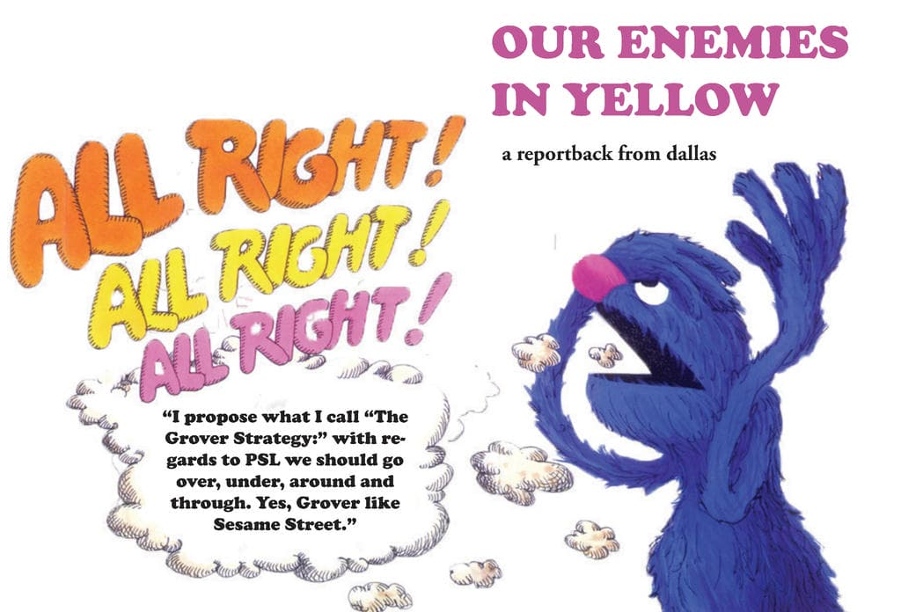

We are on the brink of a rupture in the political and social order of the United States. Trump's gamble is backfiring and opening up liberatory insurgent and revolutionary horizons. But we are reaching clear limits. The attempts to spread the rebellious spirit of LA to other places have largely fallen into traps of symbolic and minimally disruptive actions. We need to take brave steps forward in new and creative ways to act with the rebellious elements that have emerged. At the same time, we must acknowledge that the pull toward empty symbolism has not merely been for lack of alternatives. It has been the explicit strategy of people and organizations who have positioned themselves as an active barrier to escalation.
What follows is a report back from an action on June 9th in Dallas, Texas where these dynamics were on full display. The people of DFW have the desire, creativity, and courage to make history. The Party for Socialism and Liberation (PSL) of DFW however showed that it has the desire, creativity, and cowardice to prevent that from happening. But rather than complaining or fixating on the counter-insurgent clown car that is PSL, our question has to be: how do we let people cook?
People, those out on the streets and those sitting at home, are capable of great things: shaping their own lives and history through creative and free activity. Our role as self-conscious revolutionaries is to turn up the heat, we can supply some ingredients, but we cannot be the chefs. Why? Because we don't want silly hats and this isn't a freaking kitchen. We ourselves are just another part of the crowd. If you have a bullhorn, an ugly vest, or a face as-seen-on-TV, you are still just the part of the crowd that's got a bullhorn, a vest, or name recognition. Rather than spinning stories about our importance, we have to have deep faith in those strangers next to us, especially when they don't already know the old hymns and Malcolm X quotes. This faith extends to those who have followed PSL's lead out of a genuine desire to help but have become uncomfortable by the position they've been put in.
PSL and many other organizations that call themselves "the left" are a problem. But we're not afraid of problems. We've got lots of problems: the cops, the bosses, our own bullshit. It's tackling these problems, growing through that process, that is the real work of revolution.
What happened
The action was called by PSL. It was their action. They called it in an effort to borrow or steal the momentum of two powerful symbols. First was the ordinary people in Los Angeles bravely leading the way against our increasingly unhinged police-state. The second was the inspiring action in January here in Dallas at the Margaret Hunt Hill Bridge, where the June 9th action was also held.
The chronological story of the event is pretty simple. People showed up. The crowd grew to a respectable few hundred people. Early on some folks lined the road facing a growing police presence, while others stayed in the park listening to boring speeches. As folks got restless, momentum turned to take the streets. This started a cycle where some elements of the crowd pushed for more escalation and a militia of dweebs in yellow vests worked to deescalate. The result of this peace-policing meant that some people were left irresponsibly vulnerable to the cops, especially when our enemies in blue saw an excuse to flex their muscle resulting in the rather cinematic arrest of one person. Over the course of the whole evening the momentum swapped back and forth between the forces of order (whether wearing yellow or blue) and the forces of disorder. In the end the cops said enough is enough and cleared the entire park in a cloud of tear gas and pepper balls. It was at once exciting and incredibly frustrating.
Some very significant episodes will be discussed below, but the glossing over of the chronology here is meant to emphasize that in a certain sense the entire action was determined by the a few overarching dynamics: the cops were not interested in letting people "blow off steam" this time; the organizers of the event, PSL in particular, wanted to keep that steam safely evaporating so everything would go smoothly; and a host of elements in the crowd pushed and scraped against these two forces of order. This is an encapsulation of our entire historical moment, and so while the chronology of that evening isn't so important, the players and dynamics are.
The first player is the PSL and the array of formal organizations they roll with. In DFW PSL is not tiny, there were probably two dozen folks at the action wearing the group's red logo'd shirts. With some overlap there were about as many people wearing those yellow safety vests, appointing themselves special. Not everyone in a red shirt nor everyone in a vest was actually a member of PSL since over the last few years of protesting PSL has become a central player in a scene of folks who go to every public action. Other groups like the Palestinian Youth Movement (PYM), Freedom Road Socialist Organization (FRSO), the Brown Berets, and a smattering of others, while absolutely not a monolith, all constitute a scene full of relationships, shared assumptions, and drama. As I said, the scene isn't tiny, but it's also not big. In a metroplex of eight million they're maybe a couple hundred people, including the wallflowers. Outside of moments of popular upswing (now and the early phases of the genocide in Gaza being recent examples) the turn out of their actions is often uncomfortably close to the number of organizations with their logo on the flier. Importantly, this orbit has been an easy access point for people who want to put their body where their mouth is. This means that at many actions yellow vests and other unhelpful roles are populated by a cannon fodder of good hearted but inexperienced folks, left to do the dirty work of social containment . The strategy at this action on June 9th seemed to be leveraging this network to create a disciplined leadership that could make sure things went "well." In their definition going "well" means nothing happens that makes anyone especially upset, including the cops. The conservative logic here is simple: it was their action and so they're "responsible" for what happens, and of course they wouldn't want to be responsible for anyone feeling bad.
The other important player was of course the cops. The Dallas Police Department was out in force. With a basically brand new police chief, I'm sure the order was, "this will not be LA." Apparently the plan for that was flexing their muscles and being prepared for a much less compliant crowd than in January (points to them for being right about that one). One of the most interesting aspects of their presence is that they honestly seemed a little dusty. Their riot shields were old and scratched. The paint on the patty-wagons was faded. The crowd very nearly dearrested the lone arrestee. And apparently some cop's bodycam disappeared during a scuffle. It does us no good to underestimate our enemies, and raggedy cops can be more dangerous than polished ones, but it is very interesting to note that the Dallas PD does not seem to be a finely tuned crowd suppression machine. That's not the biggest surprise since the ruling class in DFW has historically relied on means of suppressing the population that work more on how people think and feel than on pushing bodies around. In the end that means people repress themselves very nicely on their own, without the cops ever needing to resort to riot gear. After all, you don't host the literal money factory next to a town known for mass unrest. The strategic implications of this are complicated, but interesting.
The final player, the most important player, was the unruly. Crucially, this was a wide and varied group. Certainly there were politicos who believed, as I do, that things should be pushed toward escalation and confrontation. But there were also lots of normal folks who couldn't give two shits about PSL, those who were there for some fun. At several moments the crowd would get amped up by low-riders backfiring or spinning out, sending plumes of white smoke into the air. Dirt bike crews did donuts and wheelies, graffiti kids tagged anything in sight, and irreverent folks wandered into the street well before PSL decided that was "the plan." This section of people did not come to their resistance to "order" by reading political theory, they came to it by living in our decrepit society and this suffocating town. They are, like any reasonable person, hungry for freedom, and they came to the protest to get some.
It seems very likely that these will be the players going forward. None of them will be static. The cops will learn and innovate, PSL will do whatever (especially now that the federal right wing seems to be puffing them up as a scapegoat), and of course people are going to be people. Our tasks as these basic players shift and move will be figuring out how to move through it and support further escalation and expansion of the struggle.
PSL's bullshit
While the detailed blow-by-blow of the event is not crucial, it's worth digging into some specific scenes of PSL's behavior because overall it was so egregious, so ludicrous, that it warrants this entire essay.
There are three specific scenes that deserve discussion. Starting first with the least offensive is their use of bullhorns. Whatever your general take on bullhorns, at this action PSL used them as an icon of their "leadership." They were a symbol of who was in charge, and who should be listened to. In part this meant barking orders: "go this way," "don't go that way." Infuriatingly these orders were usually echoes of whatever the cops were saying. PSL bullhorn resounded, "do not engage the police," "keep marching away from the bridge," and my personal favorite, "move back." This would be the peak if it weren't for the hilarious fact that when they were not repeating cop commands, they were chanting things in direct contradiction to what they were actually doing. I'll be getting months of laughs out of seeing these fools chanting "shut it down!" while literally keeping people off the street, or one bullhorn crying "no justice, no peace," at the same moment that another scolded "remain peaceful!" Is it a crime to be this funny? No, it's mostly just embarrassing. But it also tells you where their heart is: puffing themselves up about how cool and radical they are, while everyone else can see the exact opposite.
The second scene is much more egregious. Later in the evening the crowd had reassembled at the bridge and again taken the street, pushing the police into a line of shields across all four lanes of traffic. People threw bottles over the heads of the front line, making majestic arcs. People insulted the pigs. The cops felt that thin blue line getting thinner. In this faceoff, the yellow vested militia marched to position themselves between the demonstrators and the riot shields. They linked arms, in a seemingly practiced formation alternating facing in and out. While the bullhorns spewed "whose streets? Our streets!" the human chain walked away from the police line and slowly corralled people off the street. I am not kidding. I wish it was harder to believe. The cops said "clear the street," and PSL physically cleared the street.
The third and most dramatic scene is the actions by PSL around the arrest that the news has made such hay from. It occurred shortly after people took the streets for the first time. The plan for PSL was clearly to politely march away from the bridge and down the block. While there is some logic to this, the bridge was the site of a notorious mass arrest in 2020, the specifics of how they executed this plan really matter. Given that the images of militant confrontation with law enforcement in LA were ringing in peoples' minds, many people were looking to get a little rowdy with the cops. This was not a tiny minority, this was a decent chunk of the crowd. Not only did PSL bullhorns explicitly tell people to stop engaging, they worked to move the crowd away and left those who were turning up the heat isolated and vulnerable. This meant that when the cops grabbed someone they did it against only a thin crowd. Concretely, even though there was a serious attempt to de-arrest this person, there were neither enough people to succeed nor a dense enough crowd to push the person into safety had they pulled them free.
So how do we make sense of these actions by PSL? In a certain sense it's not that complicated. Whatever they intended or believed, they were working to achieve the same goals as the cops. But it is worth analyzing at least a little how they could have come to this lowly fate.
One place to start is the history of PSL. I don't subscribe to some original sin doctrine but knowing the traditions and legacies they come from feels surprisingly familiar to their current behavior. The first place to start is in 1959 when the predecessor organization to PSL, called The Workers World Party (WWP), split from the dominant American Trotskyist organization at the time, the Socialist Workers Party. One of the main reasons for the split was over the Soviet invasion of Hungary in 1956. Tanks rolled in to suppress a popular uprising, one that included workers councils and some genuine social revolutionary moments (among many other things). WWP was dismayed that their comrades criticized the Soviet Union, supposedly the beacon of freedom in the world, for militarily suppressing a workers movement. For the leaders of the WWP, the situation was simple: the Soviet Union and its client regimes were "workers states," maybe deformed, but preventing a supposed workers state falling into the sphere of capitalist imperialism was a higher good than any actual movement of workers. This episode is why we call PSL and many others "tankies." They were, and seemingly still are, pro-tank.
The second place to start is the split from WWP that formed PSL. The split occurred during the movement against the second Iraq War, and specifically in and around the ANSWER coalition, a large national anti-war organization that WWP was central to forming. I honestly don't care about the detailed terms of conditions of the split because the political vision of ANSWER, which eventually became closely aligned with PSL and served as a powerful launching point, says plenty. ANSWER was one of the major organizations that planned huge marches, literally the largest marches at that time in US history. For the months leading up to US boots on the ground, and then for years afterwards ANSWER pulled out numbers and filled plazas across the country. And what did it accomplish? Absolutely nothing. Don't let them sugar coat it. The Bush regime was all too happy to wave a middle finger at a million people on the streets of NYC and start obliterating Iraqis and destabilizing an entire region of the planet. The anti-Iraq war movement had some inspiring moments such as the shut down of west coast ports, GI resistance, and militant blockades of military supply movements. These stood in stark contrast to, and were often dismissed by, the PSL and its self-inflating position at the head of polite parades. Technically PSL's public statements about their split was largely around this failure of the anti-War movement. And yet despite their rhetoric of being more "revolutionary" than WWP, they proceeded to embrace the same passive and ineffective approach. Today, when the current administration makes Bush look like a liberal, we should be highly suspicious of a origin story like that.
In terms of their current practice, it's useful to discuss why they might be acting in the streets the way that they are. This is not to excuse them, but to clarify our own positions in contrast to theirs.
The biggest catchphrase they use to explain their actions is "safety." The people in yellow vests are here for our "safety" and breaking from the plan makes "vulnerable" people "unsafe." This is obviously patronizing, misses the fact that we're already unsafe, and also assumes we can make an omelet without breaking a few eggs. But taking their argument on face value, it's clear that they believe change happens through careful steps that minimize the risk of mess. They want desperately to avoid "adventurism," where risks feel bad and might not pan out (i.e. are risks). Instead in their eyes "the movement" should step into the street without a permit in solidarity with burning fires like a deep morning stretch, preparing for a long day of marching. This is the way we'll have a "movement" filled with "normal" people. But I think marching is fucking boring, and personally I want some adventure. I think most people do too, and I don't think "normal" people even exist, only people who pretend to be normal because they're scared of their own power. That reticence on behalf of most people, however reasonable, is one of the primary obstacles for a revolution, not because it prevents people from doing what I want them to do, but because it prevents them from doing what they want to do. Ultimately an ideological commitment to "safety" and "responsibility" on behalf of "organizers" demonstrates an ideological commitment against people's agency, and against people finding and building their own freedom.
A second major pillar of their enacted politics is the prioritization of some kind of "strategy" that requires discipline and dedication to execute correctly. Defenders of the yellow vests often appeal to how serious and committed these flashy hall monitors are. They go to "everything" after all, they put in the time, they've done the reading, and most importantly, they want to be important. Their role as people who showed up to the action with a plan means there was a plan. Who can disagree that groups of people should make good plans and execute them well?
Well this simplistic mindset doesn't really hold up when you think about it. For one thing, that's not really what PSL was doing here. The crowd was not "a group with a plan," PSL was a group of people in the crowd that had a plan, one that was contingent on them controlling everyone else. They did not have relationships or trust with most people there, instead they were expecting people to follow in their usual passive deference to authority. Moreover, I don't think their plan was a good one. March around the block chanting, when we're clearly on the verge of a national wave of militancy? No thank you.
The claim by PSL that people should "trust" their leadership because of their "experience" misunderstands entirely how groups of people develop politically. Of course we need people to learn lessons, think critically, and hone skills. But that does not happen by passively following orders. It also does not happen through one-by-one recruitment and training. A revolution is an activity undertaken by masses of people, millions of people. The political development of millions of people does not and cannot happen by everyone joining your club and sitting in your trainings. It can only happen by the free, autonomous activity of those millions of people on their own. This in turn is only possible because people are already in groups making plans and executing them. Dirt bike crews, low riders, graffiti, kitchen-chair barbers are already organized, even if many are informal and few are explicitly political. These structures of solidarity and resiliency showed their embryonic insurgent potential on June 9th. DFW is no longer, if it ever was, a land of polite bedroom communities. It's a sprawling metroplex full of people stretched thin and living by their wits. Even if people aren't financially on the edge, the pervasive fear of death by gun violence or car accident means there's a little extra spice in the air these days. It's starting from here, through struggle, that millions of people will transform the world. This is what it means to let people cook, not encouraging stupid risks and getting people hurt, but letting people learn and grow, even if sometimes that process looks a little stupid and people get hurt. If our "strategy" instead assumes "our" role is to be to the ones learning lessons and we tell "the people" what to do, then all our political work will never be much more than a weird hobby.
The crux of this difference comes down to your core political prioritizations. PSL and co believe good politics comes down to discipline and technique. I believe good politics comes down to courage and creativity. These are obviously not mutually exclusive, but where you put the emphasis really matters.
All of these confusions feed off a subtle quality of how PSL and many others relate to political work. These folks seem to be highly enamored with the narratives, stories, and even fantasies about their role in history. This plays out in big ways like the implicit belief that PSL might be or become The Party, but also in small ways like how putting on a yellow vest tends to make the wearer think they have some authority or special status. I don't say this dismissively, I've worn a vest in my time (how brave to confess, I know) and it can have a very seductive quality. You feel a little important. But the problem is that that feeling usually becomes a performance, and usually has very little basis in reality. In a word, that feeling can easily turn you into a clown. The ancient art of clowning after all is all about irony, and in the end your performance of seriousness usually ends up making you very silly. This also extends to the theatrical performances of militancy such as carrying weapons or putting on elaborate tactical gear. When these are not being used as tools to do a thing, but as costumes to perform a thing, they not only hold you back from taking bold steps (you already feel bold with your armor) they also hold others back. If someone is unsure if it's a good idea to push the limit, when they see someone who is signaling their hardness telling them to chill out they'll probably listen. And so dressing up like Antifa-Batman ends up making people into spectators waiting for you to do the stunt you're too scared to do. Importantly, this symbolic and theatrical dynamic is exactly the same as the cops don-ing riot gear and imagining they're the star of the latest Marvel movie.
This same attachment to theater is also why actions have seemed fixated on locations like the Margaret Hunt Hill Bridge and City Hall. These places are largely removed from people's ordinary lives and the actual processes of power. This essay so far has prioritized in-the-moment confrontations and pushing boundaries in the midst of a demo, but this is not meant to deny the importance of good, well executed plans that have a real material impact. Even more significant however, will be connecting the spirit of rebellion to other aspects of people’s lives and other facets of social oppression. If we allow the iconography of flags waving on the homepage of the Dallas Morning News to determine our strategy, then political activity will remain something "those people" do "over there," just like actors on TV, and never realize the potentials for social transformation.
What is to be done with PSL?
I clearly have no love for PSL, but this piece is meant to be cynical not sectarian. The question in the section title does mean we need to prioritize beating PSL, but rather we need to acknowledge they're on the scene and expect them to continue their bullshit. Given that, I propose what I call "The Grover Strategy:" with regards to PSL we should go over, under, around and through. Yes, Grover like Sesame Street.
Over, in the sense of projectiles over the heads of the yellow vests, aimed at the real enemy. But also over the sense of trusting that good politics and good plans can help make the doofuses irrelevant. If we can support masses of people to decide it's time to escalate their rebellion, then no internet-pilled dorks will be able to stop them.
Under, in the sense of undermine. By this I mean things like counter recruitment, where we help politicos who are open to a different approach to find their way to it. I also mean in the streets, where we can do things to encourage creativity and bravery despite their efforts to prevent it.
Around, in the sense of doing something separate from PSL. If they're going to hold a big march that draws all the cops, we plan something else somewhere else. If they keep on the same staid boring program, we do things that are adventurous and inspiring. Just because they make us incredibly mad, does not mean we need to spend all our energy dealing with them.
Through is the most interesting. Through in the sense of using them, using their obnoxious behavior, as itself a tool to achieve our goal. One example of this is yelling at the yellow vests at an action. This is not polite and they will get defensive and even more annoying, but the goal is not to make them see the error in their ways. Instead the goal is to raise the temperature of the crowd, helping others see that the self-appointed emperors have no clothes. At this action, one person in the crowd turned to an agitator who had been screaming at the human chain of PSL pacifiers and asked calmly, "why are you so upset?" After hearing a calm reply about how they were doing the same thing as the cops, the crowd members said, "oh, that makes sense." This type of anti-social shenanigans against PSL also helps spread the news that we do not respect authority, we're not looking for condescending saviors, we're looking for freedom.
Through applies particularly to those who have found themselves wearing yellow, but are having doubts. Many at the action earnestly thought they were helping and saw wearing a safety vest as a way to increase their contribution. This desire is admirable, and we've all made mistakes. The important challenge for these people, as with all of us, is to grapple with the complexities of our actions and have the humility to change course when our conscience and reason says we should. The other side of this is that those of you who have been nodding along with my snarky disses of PSL must allow these people to grow and support them as they look for sharper and more profound ways to advance the cause of freedom.
Another way through is reflection and discussion like this essay. It is crucial to specify how we are not, and should not be like PSL. Our analysis, strategies, and practices are made even sharper by critiquing them. For example we can see more clearly what purpose organization might serve. Rather than controlling a situation, rather than performing importance or seriousness, organization is a tool to achieve ends. Those ends, for us, are to expand the creative activity of people, and to help them find ways that their existing forms of coordination can become the seeds of their liberation. In that light discipline must be essentially self-discipline, and we should not confuse the pseudo-activity of managing our groups with the real activity of struggle.
However, avoiding becoming PSL is honestly easier said than done. A lot of their mistakes feel like common sense and are easy to rationalize. Avoiding them requires more than avoiding democratic-centralism or terrible takes on international relations. Instead it requires clarity around how we believe history is made, what our role is in that process, and a consistent humility that demands we face reality.
A key to this is to consider how we believe things might transition from conflict around this specific issue, i.e. ICE and Trump, to a more expansive process of creating a liberated world. PSLs answer is simple: build a revolutionary party, ideally PSL. But their behavior on the ground makes it clear that this notion is no solution to how the oppressed, in our millions, are supposed to take control of our own lives. Clearly we cannot support more and more power being handed to yellow vests. Instead we have to see how militant and creative confrontation within these flash points can break people's passivity. It can shatter the mirage of a world that just is how it is. From within this break, even one that might seem small such as throwing shit at the cops, a horizon opens up where people can act truly freely for the first time. That opening up is precisely what PSL is trying to put limits on, and instead we have to see it as the only way forward to the end of the world as we know it. The end of this world, after all, means the beginning of a new one.
--- Ramon Byrne